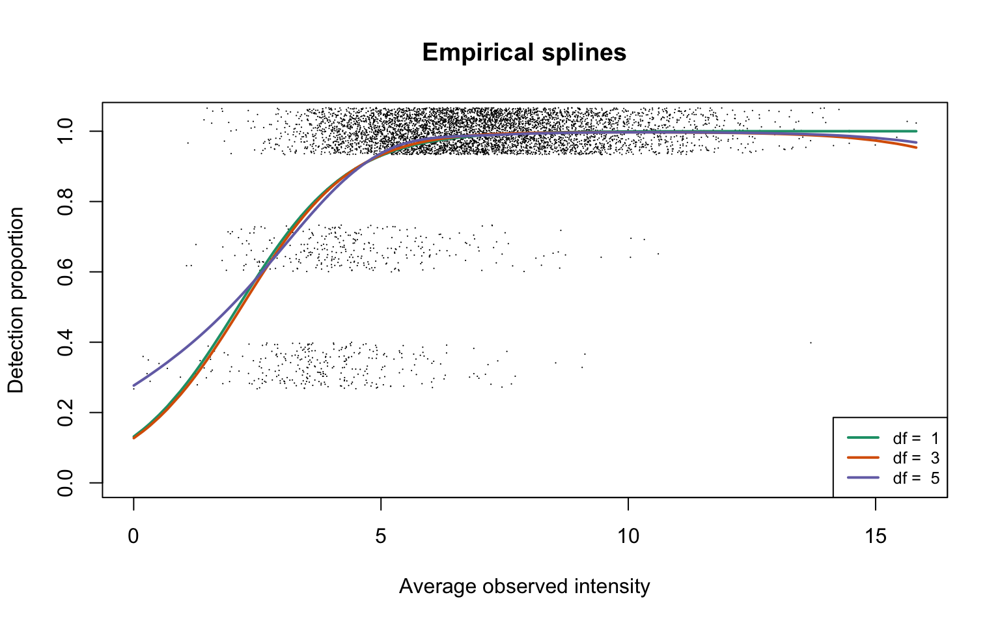
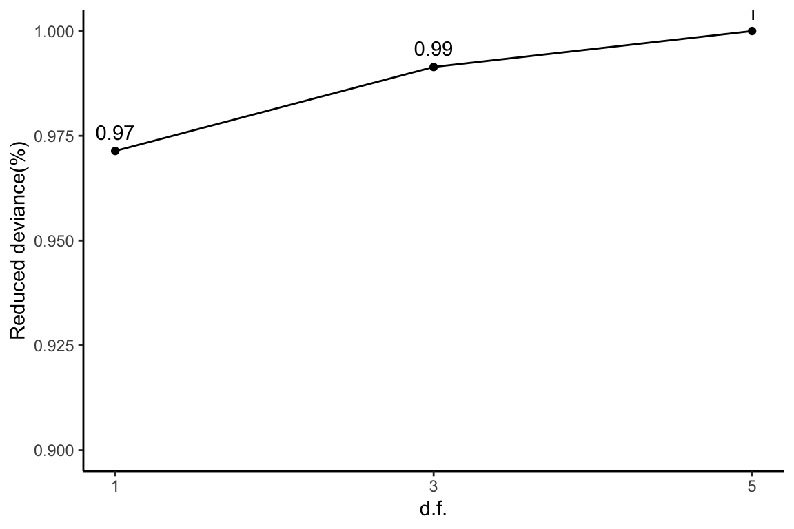
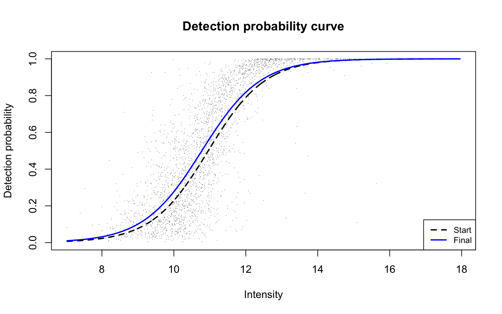
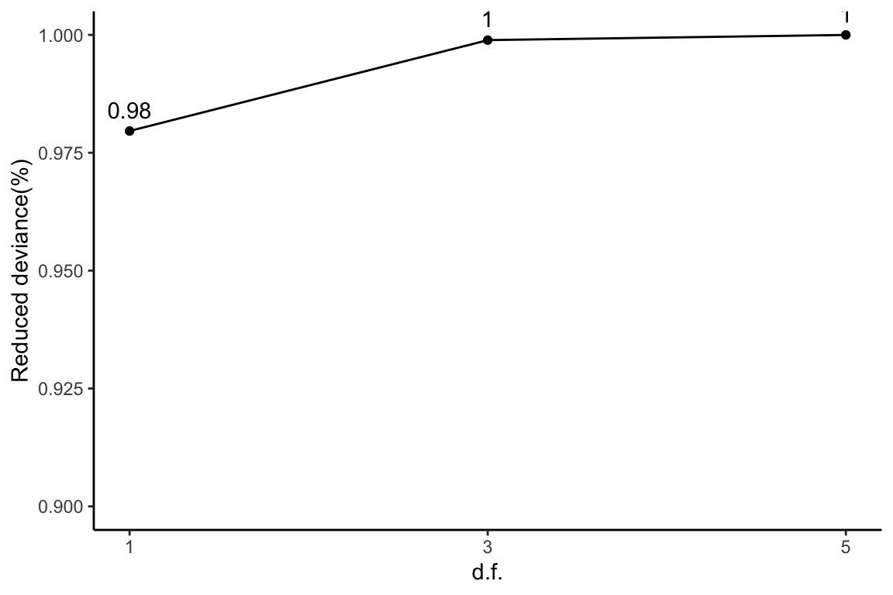
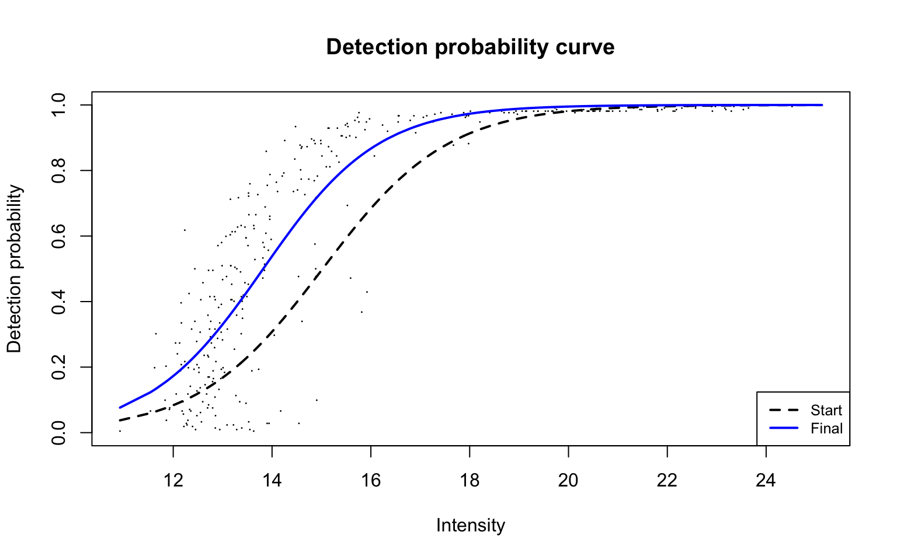
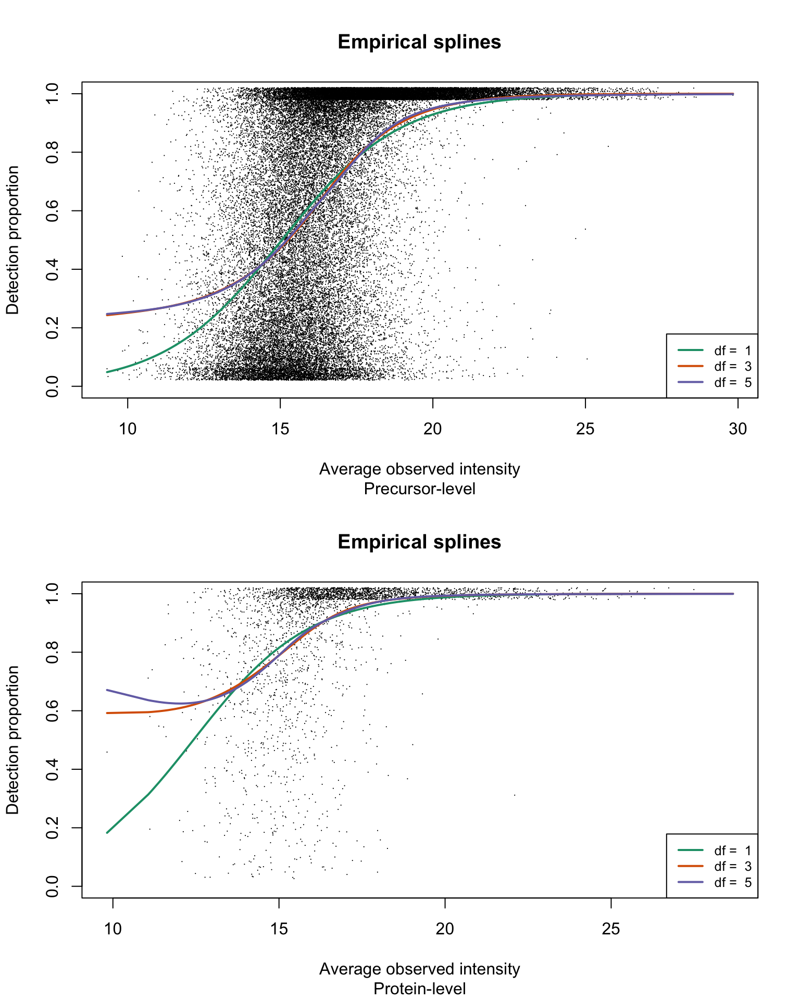
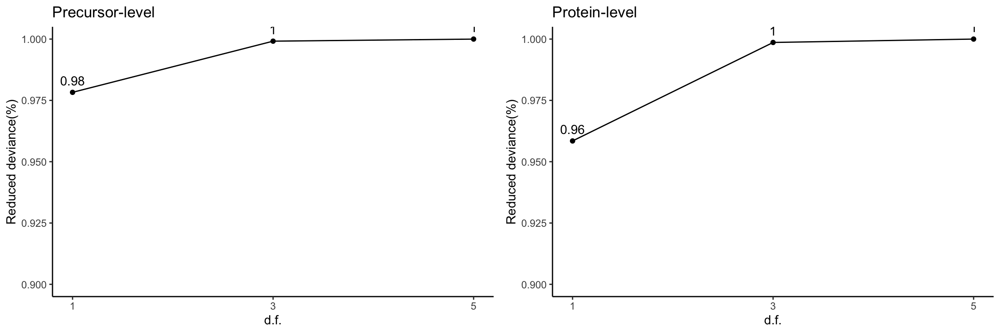
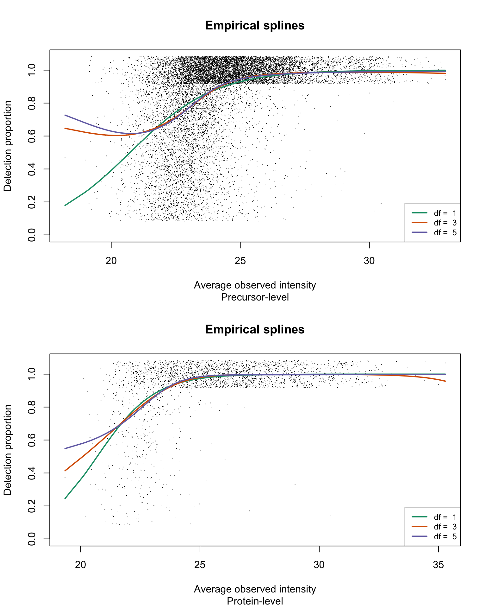
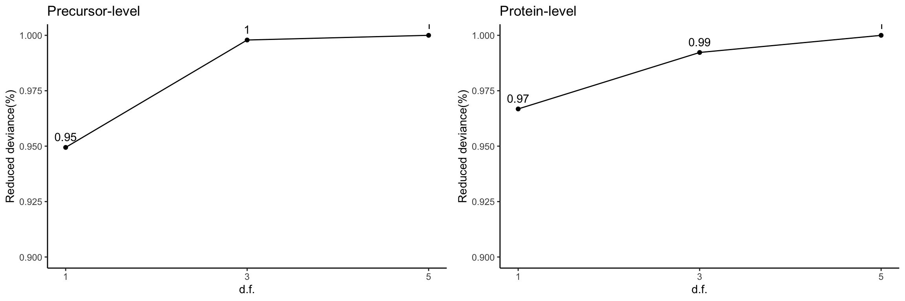
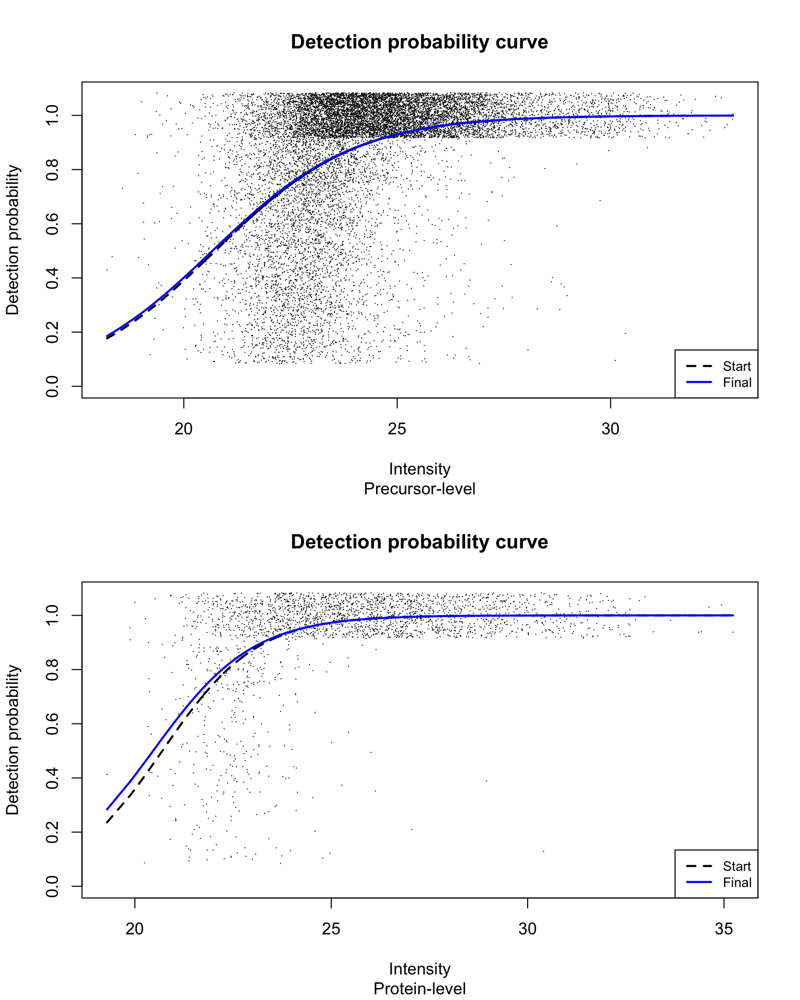

Supplementary results and figures
Mengbo Li
Bioinformatics Division, WEHIsupp.RmdOverview
On this page, the analysis workflow presented in the main text is applied on each of the four example datasets on the protein group level. Additionally, two more datasets were downloaded. The same analyses are also performed on both precursor- and protein-levels on these additional datasets.
Load packages
library(tidyverse)
library(protDP)
dfList <- seq(1, 5, 2)
lineColours <- RColorBrewer::brewer.pal(4, "Dark2")Dataset A: Hybrid proteome data
LFQ intensities summarised by MaxLFQ (Cox et al. 2014) were extracted from the DIA-NN (Demichev et al. 2020) output on the protein group level. The log2-transformation is applied to LFQ intensities.
Data overview
data("datasetA")
dat <- log2(datasetA$prot)
dim(dat)
[1] 5974 3The overall proportion of missing data on the protein level is equal to
sum(is.na(dat))/length(dat)
[1] 0.0505Empirical logistic splines for detected proportions
hyeProt <- gatherResults(dat)
for (i in 1:length(dfList)) {
if (i == 1)
plotEmpSplines(hyeProt$nuis, X = hyeProt$splineFits_params0[[i]]$X,
hyeProt$splineFits[[i]]$params, lineCol = lineColours[i],
jitter.amount = NULL, point.cex = 0.15, capped = FALSE,
ylim = c(0, 1.04))
if (i > 1)
plotEmpSplines(hyeProt$nuis, X = hyeProt$splineFits_params0[[i]]$X,
hyeProt$splineFits[[i]]$params, plot.dotts = FALSE,
lineCol = lineColours[i], capped = FALSE)
}
legend("bottomright", legend = paste("df = ", dfList), col = lineColours,
lwd = 2, lty = 1, cex = 0.8)
Reduced deviance compared to an intercept model
ggplot(slice(hyeProt$devs, 2:4), aes(x = df, y = percDevReduced)) +
geom_point() + geom_line() + geom_text(aes(label = signif(percDevReduced,
3)), vjust = -0.8) + scale_x_continuous(breaks = c(1, 3,
5)) + labs(x = "d.f.", y = "Reduced deviance(%)") + ylim(0.9,
1) + theme_classic()
Empirical logit-linear curve with capped probabilities
plotEmpSplines(hyeProt$nuis, X = hyeProt$splineFits_params0[[1]]$X,
hyeProt$cappedLinearFit$params, lineCol = lineColours[1],
ylim = c(0, 1.04), jitter.amount = NULL, point.cex = 0.15)The estimated paramters are
round(hyeProt$cappedLinearFit$params, 2)
alpha b0 b1
1.00 -2.33 19.98 We see that the estimated \(\alpha\) value is 1, suggesting no MCAR exists in data.

Dataset B: Cell cycle proteomes
LFQ intensities summarised by MaxLFQ (Cox et al. 2014) were extracted from the DIA-NN (Demichev et al. 2020) report for protein groups. The log2-transformation is first applied to LFQ intensities.
Data overview
data("datasetB")
dat <- log2(datasetB$prot)
dim(dat)
[1] 2661 231The overall proportion of missing data on the protein-level is
sum(is.na(dat))/length(dat)
[1] 0.474Empirical logistic splines for detected proportions
scProt <- gatherResults(dat)
for (i in 1:length(dfList)) {
if (i == 1)
plotEmpSplines(scProt$nuis, X = scProt$splineFits_params0[[i]]$X,
scProt$splineFits[[i]]$params, lineCol = lineColours[i],
add.jitter = FALSE, point.cex = 0.15, capped = FALSE)
if (i > 1)
plotEmpSplines(scProt$nuis, X = scProt$splineFits_params0[[i]]$X,
scProt$splineFits[[i]]$params, plot.dotts = FALSE,
lineCol = lineColours[i], capped = FALSE)
}
legend("bottomright", legend = paste("df = ", dfList), col = lineColours,
lwd = 2, lty = 1, cex = 0.8)
Reduced deviance compared to an intercept model
ggplot(slice(scProt$devs, 2:4), aes(x = df, y = percDevReduced)) +
geom_point() + geom_line() + geom_text(aes(label = signif(percDevReduced,
3)), vjust = -0.8) + scale_x_continuous(breaks = c(1, 3,
5)) + labs(x = "d.f.", y = "Reduced deviance(%)") + ylim(0.9,
1) + theme_classic()Empirical logit-linear curve with capped probabilities
plotEmpSplines(scProt$nuis, X = scProt$splineFits_params0[[1]]$X,
scProt$cappedLinearFit$params, lineCol = lineColours[1],
add.jitter = FALSE, point.cex = 0.15)Estimated parameters are
round(scProt$cappedLinearFit$params, 2)
alpha b0 b1
0.99 -4.42 17.13 Detection probability curve assuming normal observed intensities
scProt_dpcFit <- dpc(nuis = scProt$nuis, b1.upper = Inf)
plotDPC(scProt$nuis, scProt_dpcFit, add.jitter = FALSE, point.cex = 0.15)
Parameters of the detection probability curve are as follows:
round(scProt_dpcFit$beta, 2)
[1] -12.9 1.2Dataset C: HepG2 technical replicate data
For the protein group level analysis, we use the
proteinGroups.txt file from the MaxQuant output. The LFQ
intensities are first log2-transformed.
Data overview
data("datasetC")
dat <- log2(datasetC$prot)
dim(dat)
[1] 6282 27The overall proportion of missingness in protein group level data is
sum(is.na(dat))/length(dat)
[1] 0.0553Empirical logistic splines for detected proportions
hepg2Prot <- gatherResults(dat)
for (i in 1:length(dfList)) {
if (i == 1)
plotEmpSplines(hepg2Prot$nuis, X = hepg2Prot$splineFits_params0[[i]]$X,
hepg2Prot$splineFits[[i]]$params, lineCol = lineColours[i],
jitter.amount = 1/ncol(dat)/2, point.cex = 0.2, capped = FALSE)
if (i > 1)
plotEmpSplines(hepg2Prot$nuis, X = hepg2Prot$splineFits_params0[[i]]$X,
hepg2Prot$splineFits[[i]]$params, plot.dotts = FALSE,
lineCol = lineColours[i], capped = FALSE)
}
legend("bottomright", legend = paste("df = ", dfList), col = lineColours,
lwd = 2, lty = 1, cex = 0.8)Reduced deviance compared to an intercept model
ggplot(slice(hepg2Prot$devs, 2:4), aes(x = df, y = percDevReduced)) +
geom_point() + geom_line() + geom_text(aes(label = signif(percDevReduced,
3)), vjust = -0.8) + scale_x_continuous(breaks = c(1, 3,
5)) + labs(x = "d.f.", y = "Reduced deviance(%)") + ylim(0.9,
1) + theme_classic()Empirical logit-linear curve with capped probabilities
plotEmpSplines(hepg2Prot$nuis, X = hepg2Prot$splineFits_params0[[1]]$X,
hepg2Prot$cappedLinearFit$params, lineCol = lineColours[1],
jitter.amount = 1/ncol(dat)/2, point.cex = 0.2)The estimated parameters are
round(hepg2Prot$cappedLinearFit$params, 2)
alpha b0 b1
0.99 -1.94 14.66 Dataset D: Human blood plasma proteome
For the protein group level analysis, we use the
proteinGroups.txt file from the MaxQuant output downloaded
from the ProteomeXchange Consortium via the PRIDE partner repository
with the dataset identifier PXD014777.
Data overview
data("datasetD")
dat <- log2(datasetD$prot)
dim(dat)
[1] 332 212The overall proportion of missing data in the protein group level data is
sum(is.na(dat))/length(dat)
[1] 0.412Empirical logistic splines for detected proportions
ddaPlasmaProt <- gatherResults(dat)
for (i in 1:length(dfList)) {
if (i == 1)
plotEmpSplines(ddaPlasmaProt$nuis, X = ddaPlasmaProt$splineFits_params0[[i]]$X,
ddaPlasmaProt$splineFits[[i]]$params, lineCol = lineColours[i],
add.jitter = FALSE, point.cex = 0.2, capped = FALSE)
if (i > 1)
plotEmpSplines(ddaPlasmaProt$nuis, X = ddaPlasmaProt$splineFits_params0[[i]]$X,
ddaPlasmaProt$splineFits[[i]]$params, plot.dotts = FALSE,
lineCol = lineColours[i], capped = FALSE)
}
legend("bottomright", legend = paste("df = ", dfList), col = lineColours,
lwd = 2, lty = 1, cex = 0.8)Reduced deviance compared to an intercept model
ggplot(slice(ddaPlasmaProt$devs, 2:4), aes(x = df, y = percDevReduced)) +
geom_point() + geom_line() + geom_text(aes(label = signif(percDevReduced,
3)), vjust = -0.8) + scale_x_continuous(breaks = c(1, 3,
5)) + labs(x = "d.f.", y = "Reduced deviance(%)") + ylim(0.9,
1) + theme_classic()
Empirical logit-linear curve with capped probabilities
plotEmpSplines(ddaPlasmaProt$nuis, X = ddaPlasmaProt$splineFits_params0[[1]]$X,
ddaPlasmaProt$cappedLinearFit$params, lineCol = lineColours[1],
add.jitter = FALSE, point.cex = 0.2)Estimated parameters are
round(ddaPlasmaProt$cappedLinearFit$params, 2)
alpha b0 b1
0.98 -3.65 18.16 Detection probability curve assuming normal observed intensities
plotDPC(ddaPlasmaProt$nuis, ddaPlasmaProt$dpcFit, add.jitter = FALSE,
point.cex = 0.2)
Parameters for the fitted detection probability curve are
round(ddaPlasmaProt$dpcFit$beta, 2)
[1] -10.86 0.78Supplmentary dataset: Sydney heart bank data
Cryopreserved left ventricular myocardium samples from the human hearts were analysed. MS data were acquired in DIA mode and analysed by Spectronaunt v12 with a DDA spectral library generated from the pooled sample (Li et al. 2020). Details on sample preparation, LC-MS/MS workflow and data processing steps including the generation of the spectial library can be found in Li et al. (2020). Here we consider the healthy donor heart samples. Both precursor- and protein group-level data are log2-transformed before analysis.
Data summary
data("shbheart")
shbheart_prec <- log2(shbheart$prec)
dim(shbheart_prec)
[1] 42742 24
shbheart_prot <- log2(shbheart$prot)
dim(shbheart_prot)
[1] 3208 24The overall proportion of missing data on the precursor-level is
sum(is.na(shbheart_prec))/length(shbheart_prec)
[1] 0.334While the overall proportion of missingness on the protein group-level is
sum(is.na(shbheart_prot))/length(shbheart_prot)
[1] 0.12Empirical logistic splines for detected proportions
The analysis workflow presented in the manuscript is applied on the dataset on both precursor- and protein group-level data:
res <- list(prec = gatherResults(shbheart_prec), prot = gatherResults(shbheart_prot))
par(mfrow = c(2, 1))
for (res_i in 1:2) {
eachRes <- res[[res_i]]
for (i in 1:length(dfList)) {
if (i == 1)
plotEmpSplines(eachRes$nuis, X = eachRes$splineFits_params0[[i]]$X,
eachRes$splineFits[[i]]$params, lineCol = lineColours[i],
jitter.amount = 1/ncol(shbheart_prec)/2, point.cex = 0.15,
capped = FALSE)
if (i > 1)
plotEmpSplines(eachRes$nuis, X = eachRes$splineFits_params0[[i]]$X,
eachRes$splineFits[[i]]$params, plot.dotts = FALSE,
lineCol = lineColours[i], capped = FALSE)
}
title(sub = c("Precursor-level", "Protein-level")[res_i])
legend("bottomright", legend = paste("df = ", dfList), col = lineColours,
lwd = 2, lty = 1, cex = 0.8)
}
Reduced deviance compared to an intercept model
devPlot1 <- ggplot(slice(res[[1]]$devs, 2:4), aes(x = df, y = percDevReduced)) +
geom_point() + geom_line() + geom_text(aes(label = signif(percDevReduced,
3)), vjust = -0.8) + scale_x_continuous(breaks = c(1, 3,
5)) + labs(x = "d.f.", y = "Reduced deviance(%)") + ylim(0.9,
1) + theme_classic() + ggtitle("Precursor-level")
devPlot2 <- ggplot(slice(res[[2]]$devs, 2:4), aes(x = df, y = percDevReduced)) +
geom_point() + geom_line() + geom_text(aes(label = signif(percDevReduced,
3)), vjust = -0.8) + scale_x_continuous(breaks = c(1, 3,
5)) + labs(x = "d.f.", y = "Reduced deviance(%)") + ylim(0.9,
1) + theme_classic() + ggtitle("Protein-level")
gridExtra::grid.arrange(devPlot1, devPlot2, ncol = 2)
Empirical logit-linear curve with capped probabilities
par(mfrow = c(2, 1))
for (res_i in 1:2) {
eachRes <- res[[res_i]]
plotEmpSplines(eachRes$nuis, X = eachRes$splineFits_params0[[1]]$X,
eachRes$cappedLinearFit$params, lineCol = lineColours[1],
jitter.amount = 1/ncol(shbheart_prec)/2, point.cex = 0.15)
title(sub = c("Precursor-level", "Protein-level")[res_i])
}With estimated parameters on precursor-level data being:
round(res[["prec"]]$cappedLinearFit$params, 2)
alpha b0 b1
1.00 -2.98 13.29 and estimated parameters on protein-level data being:
round(res[["prot"]]$cappedLinearFit$params, 2)
alpha b0 b1
1.0 -1.5 13.6 Estimated \(\alpha\) values are equal to 1 on both precursor- and protein group-level data.
Detection probability curve assuming normal observed intensities
par(mfrow = c(2, 1))
for (res_i in 1:2) {
eachRes <- res[[res_i]]
plotDPC(eachRes$nuis, eachRes$dpcFit, jitter.amount = 1/ncol(shbheart_prec)/2,
point.cex = 0.15)
title(sub = c("Precursor-level", "Protein-level")[res_i])
}With estimated parameters on precursor-level data being:
round(res[["prec"]]$dpcFit$beta, 2)
[1] -7.79 0.52and estimated parameters on protein-level data being:
round(res[["prot"]]$dpcFit$beta, 2)
[1] -7.09 0.57Supplmentary dataset: UPS1 spiked in yeast extract
Three concentrations of UPS1 (25 fmol, 10 fmol and 5 fmol) were
spiked in yeast extract (Giai Gianetto et al.
2016). This is a DDA dataset and MS raw data were processed by
MaxQuant. Here we look at the dataset which compares 25 fmol to 10 fmol
spiked-ins. Processed data were downloaded from ProteomeXchange
Consortium via the PRIDE partner repository with the dataset identifier
PXD002370. For peptide-level data, we use the peptides.txt
file and for the protein-level analysis, we use the
proteinGroups.txt file from the MaxQuant output.
Log2-transformation is first applied before analysis.
Data summary
data("ratio2.5")
usp1_prec <- log2(ratio2.5$prec)
dim(usp1_prec)
[1] 13186 6
usp1_prot <- log2(ratio2.5$prot)
dim(usp1_prot)
[1] 2342 6The overall proportion of missing data for the precursor-level data is
sum(is.na(usp1_prec))/length(usp1_prec)
[1] 0.147The overall proportion of missing data for the protein-level data is
sum(is.na(usp1_prot))/length(usp1_prot)
[1] 0.0677Empirical logistic splines for detected proportions
res <- list(prec = gatherResults(usp1_prec), prot = gatherResults(usp1_prot))
par(mfrow = c(2, 1))
for (res_i in 1:2) {
eachRes <- res[[res_i]]
for (i in 1:length(dfList)) {
if (i == 1)
plotEmpSplines(eachRes$nuis, X = eachRes$splineFits_params0[[i]]$X,
eachRes$splineFits[[i]]$params, lineCol = lineColours[i],
jitter.amount = 1/ncol(usp1_prec)/2, point.cex = 0.15,
capped = FALSE, ylim = c(0, 1.08))
if (i > 1)
plotEmpSplines(eachRes$nuis, X = eachRes$splineFits_params0[[i]]$X,
eachRes$splineFits[[i]]$params, plot.dotts = FALSE,
lineCol = lineColours[i], capped = FALSE)
}
title(sub = c("Precursor-level", "Protein-level")[res_i])
legend("bottomright", legend = paste("df = ", dfList), col = lineColours,
lwd = 2, lty = 1, cex = 0.8)
}
Reduced deviance compared to an intercept model
devPlot1 <- ggplot(slice(res[[1]]$devs, 2:4), aes(x = df, y = percDevReduced)) +
geom_point() + geom_line() + geom_text(aes(label = signif(percDevReduced,
3)), vjust = -0.8) + scale_x_continuous(breaks = c(1, 3,
5)) + labs(x = "d.f.", y = "Reduced deviance(%)") + ylim(0.9,
1) + theme_classic() + ggtitle("Precursor-level")
devPlot2 <- ggplot(slice(res[[2]]$devs, 2:4), aes(x = df, y = percDevReduced)) +
geom_point() + geom_line() + geom_text(aes(label = signif(percDevReduced,
3)), vjust = -0.8) + scale_x_continuous(breaks = c(1, 3,
5)) + labs(x = "d.f.", y = "Reduced deviance(%)") + ylim(0.9,
1) + theme_classic() + ggtitle("Protein-level")
gridExtra::grid.arrange(devPlot1, devPlot2, ncol = 2)
The spline with 1 degree of freedom contributes the majority to the total amount of reduced deviance in both precursor- and protein group-level data.
Empirical logit-linear curve with capped probabilities
par(mfrow = c(2, 1))
for (res_i in 1:2) {
eachRes <- res[[res_i]]
plotEmpSplines(eachRes$nuis, X = eachRes$splineFits_params0[[1]]$X,
eachRes$cappedLinearFit$params, lineCol = lineColours[1],
jitter.amount = 1/ncol(usp1_prec)/2, point.cex = 0.15,
ylim = c(0, 1.08))
title(sub = c("Precursor-level", "Protein-level")[res_i])
}With estimated parameters on precursor-level data being:
round(res[["prec"]]$cappedLinearFit$params, 2)
alpha b0 b1
1.00 -1.56 11.30 and estimated parameters on protein-level data being:
round(res[["prot"]]$cappedLinearFit$params, 2)
alpha b0 b1
1.00 -1.29 17.70 Estimated \(\alpha\) values are 1 for both precursor- and protein group-level data.
Detection probability curve assuming normal observed intensities
par(mfrow = c(2, 1))
for (res_i in 1:2) {
eachRes <- res[[res_i]]
plotDPC(eachRes$nuis, eachRes$dpcFit, jitter.amount = 1/ncol(usp1_prec)/2,
point.cex = 0.15)
title(sub = c("Precursor-level", "Protein-level")[res_i])
}
With estimated parameters for the fitted detection probability curve for precursor-level data being:
round(res$prec$dpcFit$beta, 2)
[1] -12.4 0.6and estimated parameters for the fitted detection probability curve for the protein group-level data being:
round(res$prot$dpcFit$beta, 2)
[1] -17.11 0.83References
Session information
sessionInfo()
R version 4.2.0 (2022-04-22)
Platform: x86_64-apple-darwin17.0 (64-bit)
Running under: macOS Big Sur/Monterey 10.16
Matrix products: default
BLAS: /Library/Frameworks/R.framework/Versions/4.2/Resources/lib/libRblas.0.dylib
LAPACK: /Library/Frameworks/R.framework/Versions/4.2/Resources/lib/libRlapack.dylib
locale:
[1] en_AU.UTF-8/en_AU.UTF-8/en_AU.UTF-8/C/en_AU.UTF-8/en_AU.UTF-8
attached base packages:
[1] stats graphics grDevices utils datasets methods base
other attached packages:
[1] protDP_0.1.0 forcats_0.5.1 stringr_1.4.0 dplyr_1.0.9 purrr_0.3.4 readr_2.1.2
[7] tidyr_1.2.0 tibble_3.1.7 ggplot2_3.3.6 tidyverse_1.3.1
loaded via a namespace (and not attached):
[1] lubridate_1.8.0 assertthat_0.2.1 rprojroot_2.0.3 digest_0.6.29 utf8_1.2.2
[6] R6_2.5.1 cellranger_1.1.0 backports_1.4.1 reprex_2.0.1 evaluate_0.15
[11] highr_0.9 httr_1.4.3 pillar_1.7.0 rlang_1.0.2 readxl_1.4.0
[16] rstudioapi_0.13 jquerylib_0.1.4 rmarkdown_2.14 pkgdown_2.0.3 labeling_0.4.2
[21] splines_4.2.0 textshaping_0.3.6 desc_1.4.1 munsell_0.5.0 broom_0.8.0
[26] compiler_4.2.0 modelr_0.1.8 xfun_0.31 pkgconfig_2.0.3 systemfonts_1.0.4
[31] htmltools_0.5.2 tidyselect_1.1.2 gridExtra_2.3 fansi_1.0.3 crayon_1.5.1
[36] tzdb_0.3.0 dbplyr_2.1.1 withr_2.5.0 grid_4.2.0 jsonlite_1.8.0
[41] gtable_0.3.0 lifecycle_1.0.1 DBI_1.1.2 magrittr_2.0.3 formatR_1.12
[46] scales_1.2.0 cli_3.3.0 stringi_1.7.6 cachem_1.0.6 farver_2.1.0
[51] fs_1.5.2 limma_3.52.1 xml2_1.3.3 bslib_0.3.1 ellipsis_0.3.2
[56] ragg_1.2.2 generics_0.1.2 vctrs_0.4.1 RColorBrewer_1.1-3 tools_4.2.0
[61] glue_1.6.2 hms_1.1.1 fastmap_1.1.0 yaml_2.3.5 colorspace_2.0-3
[66] rvest_1.0.2 memoise_2.0.1 knitr_1.39 haven_2.5.0 sass_0.4.1